pacman::p_load(sf, tidyverse, tmap, sfdep)Take Home Exercise 2: Spatio-temporal Analysis of Vaccination Trends in DKI Jakarta
Background
In response to the Covid-19 pandemic, Indonesia launched an ongoing mass immunisation program. According to covid19.go.id as of 15 February 2023, 203.823.041 of Indonesia’s population has received the first dose, 174.828.708 has received the second dose, 69.759.284 has received the third dose, and 2.007.703 has received the fourth dose. Indonesia is targetting to have 234.666.020 of its population vaccinated against Covid-19.
This project aims to investigate the distribution of cumulative vaccination rate across the province of DKI Jakarta, in hopes of identifying kelurahan (sub-districts) with relatively higher vaccination rates and how they have changed over time. The period of study for this project is confined to July 2021 - June 2022.
Context
Indonesia’s geographical territory is divided into this hierarchy:
Level 1: Provinsi / Daerah Istimewa (Provinces / Special Area)
Level 2: Kabupaten / Kota (Regency / City)
Level 3: Kecamatan (District)
Level 4: Desa / Kelurahan (Village / Sub-district)
Others: Rukun Warga & Rukun Tetangga (Rukun Warga is below Kelurahan, and Rukun Tetangga is technically the smallest unit of administrative division. However, it is not actually included in governmental administration)
DKI Jakarta is a province specially dedicated for the capital of Indonesia. It is made up of 5 kota (Jakarta Barat, Jakarta Pusat, Jakarta Selatan, Jakarta Timur, and Jakarta Utara), 1 kabupaten (Kepulauan Seribu), 44 kecamatan, and 267 kelurahan.
Import
Packages
The packages used in this project are:
sf: for importing, managing, and processing geospatial data.
tidyverse: a family of other R packages for performing data science tasks such as importing, wrangling, and visualising data.
tmap: creating thematic maps
sfdep: for analysing spatial dependencies
Geospatial Data
We can get the 2019 DKI Jakarta administration boundary data from Indonesia Geospasial data portal.
jkt_sf <- st_read(dsn = "data/geospatial",
layer = "BATAS_DESA_DESEMBER_2019_DUKCAPIL_DKI_JAKARTA")Reading layer `BATAS_DESA_DESEMBER_2019_DUKCAPIL_DKI_JAKARTA' from data source
`C:\Jenpoer\IS415-GAA\Take-Home-Exercises\exe-02\data\geospatial'
using driver `ESRI Shapefile'
Simple feature collection with 269 features and 161 fields
Geometry type: MULTIPOLYGON
Dimension: XY
Bounding box: xmin: 106.3831 ymin: -6.370815 xmax: 106.9728 ymax: -5.184322
Geodetic CRS: WGS 84Aspatial Data
The data we are going to use is from Riwayat File Vaksinasi DKI Jakarta, which has daily vaccination records done in DKI Jakarta. For this project, we are confining the time period of study from July 2021 - June 2022. Therefore, we will take data from the last day of every month.
As the files are in XLSX format, we can use the readxl package included in tidyverse, specifically the read_excel() function. We need to specify the sheet that we are concerned with as “Data Kelurahan”, as we will be analysing on a kelurahan level.
To distinguish between the information for each sheet, we will add a column with the dates.
# Converts the file names into a vector of date strings
dates <- list.files("data/aspatial") %>%
lapply(substring, first=36) %>%
strtrim(nchar(.) - 6)
dates [1] "27 Februari 2022" "30 April 2022" "30 Juni 2022"
[4] "30 November 2021" "30 September 2021" "31 Agustus 2021"
[7] "31 Desember 2021" "31 Januari 2022" "31 Juli 2021"
[10] "31 Maret 2022" "31 Mei 2022" "31 Oktober 2021" vaccine <- list.files("data/aspatial", full.names = TRUE) %>% # list all files
lapply(readxl::read_excel, sheet="Data Kelurahan") # apply read_excel to all
names(vaccine) <- dates # set the list's names as dates
vaccine <- vaccine %>% bind_rows(.id = "DATE") # bind rows into a tibble with date as idData Preprocessing
Geospatial Data
Selecting relevant information
colnames(jkt_sf) [1] "OBJECT_ID" "KODE_DESA" "DESA" "KODE" "PROVINSI"
[6] "KAB_KOTA" "KECAMATAN" "DESA_KELUR" "JUMLAH_PEN" "JUMLAH_KK"
[11] "LUAS_WILAY" "KEPADATAN" "PERPINDAHA" "JUMLAH_MEN" "PERUBAHAN"
[16] "WAJIB_KTP" "SILAM" "KRISTEN" "KHATOLIK" "HINDU"
[21] "BUDHA" "KONGHUCU" "KEPERCAYAA" "PRIA" "WANITA"
[26] "BELUM_KAWI" "KAWIN" "CERAI_HIDU" "CERAI_MATI" "U0"
[31] "U5" "U10" "U15" "U20" "U25"
[36] "U30" "U35" "U40" "U45" "U50"
[41] "U55" "U60" "U65" "U70" "U75"
[46] "TIDAK_BELU" "BELUM_TAMA" "TAMAT_SD" "SLTP" "SLTA"
[51] "DIPLOMA_I" "DIPLOMA_II" "DIPLOMA_IV" "STRATA_II" "STRATA_III"
[56] "BELUM_TIDA" "APARATUR_P" "TENAGA_PEN" "WIRASWASTA" "PERTANIAN"
[61] "NELAYAN" "AGAMA_DAN" "PELAJAR_MA" "TENAGA_KES" "PENSIUNAN"
[66] "LAINNYA" "GENERATED" "KODE_DES_1" "BELUM_" "MENGUR_"
[71] "PELAJAR_" "PENSIUNA_1" "PEGAWAI_" "TENTARA" "KEPOLISIAN"
[76] "PERDAG_" "PETANI" "PETERN_" "NELAYAN_1" "INDUSTR_"
[81] "KONSTR_" "TRANSP_" "KARYAW_" "KARYAW1" "KARYAW1_1"
[86] "KARYAW1_12" "BURUH" "BURUH_" "BURUH1" "BURUH1_1"
[91] "PEMBANT_" "TUKANG" "TUKANG_1" "TUKANG_12" "TUKANG__13"
[96] "TUKANG__14" "TUKANG__15" "TUKANG__16" "TUKANG__17" "PENATA"
[101] "PENATA_" "PENATA1_1" "MEKANIK" "SENIMAN_" "TABIB"
[106] "PARAJI_" "PERANCA_" "PENTER_" "IMAM_M" "PENDETA"
[111] "PASTOR" "WARTAWAN" "USTADZ" "JURU_M" "PROMOT"
[116] "ANGGOTA_" "ANGGOTA1" "ANGGOTA1_1" "PRESIDEN" "WAKIL_PRES"
[121] "ANGGOTA1_2" "ANGGOTA1_3" "DUTA_B" "GUBERNUR" "WAKIL_GUBE"
[126] "BUPATI" "WAKIL_BUPA" "WALIKOTA" "WAKIL_WALI" "ANGGOTA1_4"
[131] "ANGGOTA1_5" "DOSEN" "GURU" "PILOT" "PENGACARA_"
[136] "NOTARIS" "ARSITEK" "AKUNTA_" "KONSUL_" "DOKTER"
[141] "BIDAN" "PERAWAT" "APOTEK_" "PSIKIATER" "PENYIA_"
[146] "PENYIA1" "PELAUT" "PENELITI" "SOPIR" "PIALAN"
[151] "PARANORMAL" "PEDAGA_" "PERANG_" "KEPALA_" "BIARAW_"
[156] "WIRASWAST_" "LAINNYA_12" "LUAS_DESA" "KODE_DES_3" "DESA_KEL_1"
[161] "KODE_12" "geometry" The original data from the Indonesia Geospasial data portal has a lot of features. However, for the purpose of our study, we are only concerned about the first 9 columns (up to JUMLAH_PEN = Total Population). Hence, to make it easier to work with our data, we will only select the first 9 columns.
jkt_sf <- jkt_sf %>% dplyr::select(c(0:9))Correcting projection information
st_crs(jkt_sf)Coordinate Reference System:
User input: WGS 84
wkt:
GEOGCRS["WGS 84",
DATUM["World Geodetic System 1984",
ELLIPSOID["WGS 84",6378137,298.257223563,
LENGTHUNIT["metre",1]]],
PRIMEM["Greenwich",0,
ANGLEUNIT["degree",0.0174532925199433]],
CS[ellipsoidal,2],
AXIS["latitude",north,
ORDER[1],
ANGLEUNIT["degree",0.0174532925199433]],
AXIS["longitude",east,
ORDER[2],
ANGLEUNIT["degree",0.0174532925199433]],
ID["EPSG",4326]]Inspecting the CRS of the jkt spatial dataframe that we created, it appears that it is using the WGS 84 projection system with EPSG 4326. However, we want to use Indonesia’s national Projected Coordinate System of DGN95 / Indonesia TM-3 zone 54.1, which is EPSG 23845. Therefore, we need to re-project it using st_transform().
jkt_sf <- jkt_sf %>% st_transform(crs=23845)
st_crs(jkt_sf)Coordinate Reference System:
User input: EPSG:23845
wkt:
PROJCRS["DGN95 / Indonesia TM-3 zone 54.1",
BASEGEOGCRS["DGN95",
DATUM["Datum Geodesi Nasional 1995",
ELLIPSOID["WGS 84",6378137,298.257223563,
LENGTHUNIT["metre",1]]],
PRIMEM["Greenwich",0,
ANGLEUNIT["degree",0.0174532925199433]],
ID["EPSG",4755]],
CONVERSION["Indonesia TM-3 zone 54.1",
METHOD["Transverse Mercator",
ID["EPSG",9807]],
PARAMETER["Latitude of natural origin",0,
ANGLEUNIT["degree",0.0174532925199433],
ID["EPSG",8801]],
PARAMETER["Longitude of natural origin",139.5,
ANGLEUNIT["degree",0.0174532925199433],
ID["EPSG",8802]],
PARAMETER["Scale factor at natural origin",0.9999,
SCALEUNIT["unity",1],
ID["EPSG",8805]],
PARAMETER["False easting",200000,
LENGTHUNIT["metre",1],
ID["EPSG",8806]],
PARAMETER["False northing",1500000,
LENGTHUNIT["metre",1],
ID["EPSG",8807]]],
CS[Cartesian,2],
AXIS["easting (X)",east,
ORDER[1],
LENGTHUNIT["metre",1]],
AXIS["northing (Y)",north,
ORDER[2],
LENGTHUNIT["metre",1]],
USAGE[
SCOPE["Cadastre."],
AREA["Indonesia - onshore east of 138°E."],
BBOX[-9.19,138,-1.49,141.01]],
ID["EPSG",23845]]Confining area of study
tmap_mode('plot')
tm_shape(jkt_sf) +
tm_polygons("KAB_KOTA") 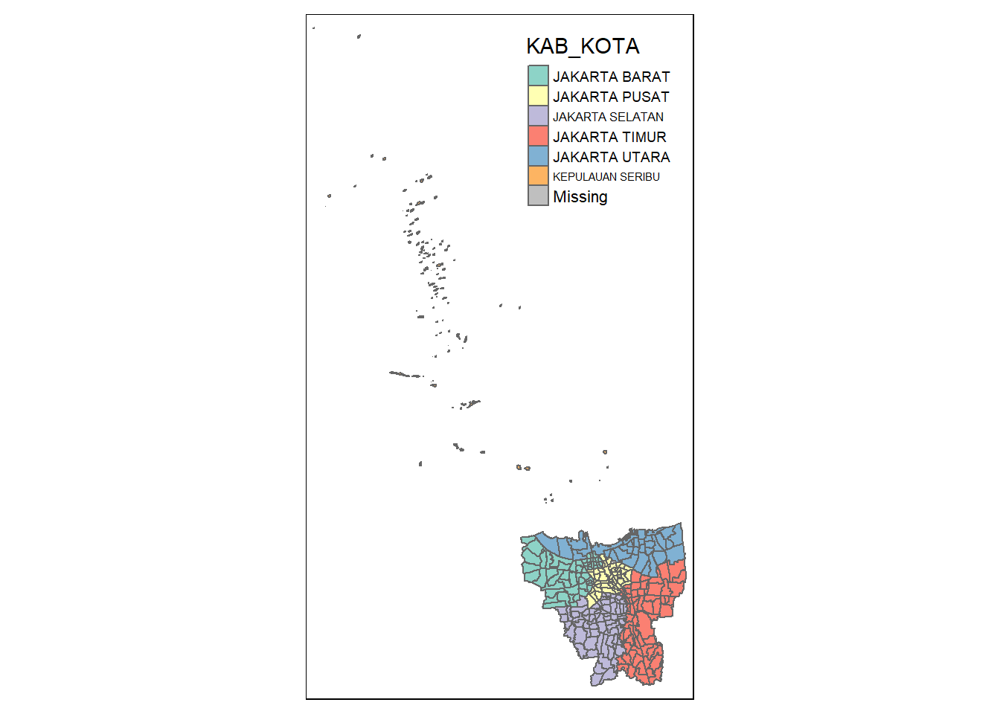
As mentioned in the Context section, DKI Jakarta includes Kabupaten Kepulauan Seribu - an archipelago of smaller islands located off-shore of the rest of the cities located in mainland Java. As we will be doing some neighbour calculations, in the interest of simplicity, we will exclude Kepulauan Seribu from the analysis. We will also exclude Danau Sunter.
jkt_sf <- jkt_sf %>% filter(`KAB_KOTA` %in% c('JAKARTA BARAT',
'JAKARTA PUSAT',
'JAKARTA SELATAN',
'JAKARTA TIMUR',
'JAKARTA UTARA'))tm_shape(jkt_sf) + tm_polygons()
Aspatial Data
Inspecting the data
The aspatial data contains 35 columns.
Explanation (click to expand)
DATE: The date from which the data is taken (according to the excel sheets)
KODE_KELURAHAN: Sub-district code
WILAYAH KOTA: City
KECAMATAN: District
KELURAHAN: Sub-district
SASARAN: Target population
BELUM VAKSIN: Unvaccinated
JUMLAH DOSIS 1: Number of people who have been given the first dose up to that point
JUMLAH DOSIS 2: Number of people who have been given the second dose up to that point
JUMLAH DOSIS 3: Number of people who have been given the third dose up to that point
TOTAL VAKSIN DIBERIKAN: Total number of vaccine given up to that point
LANSIA (DOSIS 1 / DOSIS 2 / TOTAL VAKSIN DIBERIKAN / DOSIS 3): Elderly (first dose / second dose / total / third dose)
PELAYAN PUBLIK (DOSIS 1 / DOSIS 2 / TOTAL VAKSIN DIBERIKAN / DOSIS 3): Public worker (first dose / second dose / total / third dose)
GOTONG ROYONG (DOSIS 1 / DOSIS 2 / TOTAL VAKSIN DIBERIKAN / DOSIS 3): Vaccination under the Gotong Royong scheme (first dose / second dose / total / third dose)
TENAGA KESAHATAN (DOSIS 1 / DOSIS 2 / TOTAL VAKSIN DIBERIKAN / DOSIS 3): Healthcare worker (first dose / second dose / total / third dose)
TAHAPAN 3 (DOSIS 1 / DOSIS 2 / TOTAL VAKSINASI DIBERIKAN / DOSIS 3): Stage 3 - General public (first dose / second dose / total / third dose)
REMAJA (DOSIS 1 / DOSIS 2 / TOTAL VAKSINASI DIBERIKAN / DOSIS 3): Teenagers (first dose / second dose / total / third dose)
glimpse(vaccine)Rows: 3,216
Columns: 35
$ DATE <chr> "27 Februari 2022", "27 F…
$ `KODE KELURAHAN` <chr> NA, "3172051003", "317304…
$ `WILAYAH KOTA` <chr> NA, "JAKARTA UTARA", "JAK…
$ KECAMATAN <chr> NA, "PADEMANGAN", "TAMBOR…
$ KELURAHAN <chr> "TOTAL", "ANCOL", "ANGKE"…
$ SASARAN <dbl> 8941211, 23947, 29381, 29…
$ `BELUM VAKSIN` <dbl> 1517196, 4592, 5319, 5903…
$ `JUMLAH\r\nDOSIS 1` <dbl> 7424015, 19355, 24062, 23…
$ `JUMLAH\r\nDOSIS 2` <dbl> 6590380, 16687, 20738, 19…
$ `TOTAL VAKSIN\r\nDIBERIKAN` <dbl> 14014395, 36042, 44800, 4…
$ `LANSIA\r\nDOSIS 1` <dbl> 646481, 1567, 2465, 1451,…
$ `LANSIA\r\nDOSIS 2` <dbl> 604751, 1418, 2336, 1348,…
$ `LANSIA TOTAL \r\nVAKSIN DIBERIKAN` <dbl> 1251232, 2985, 4801, 2799…
$ `PELAYAN PUBLIK\r\nDOSIS 1` <dbl> 1478545, 3971, 3899, 4590…
$ `PELAYAN PUBLIK\r\nDOSIS 2` <dbl> 1371190, 3614, 3512, 4161…
$ `PELAYAN PUBLIK TOTAL\r\nVAKSIN DIBERIKAN` <dbl> 2849735, 7585, 7411, 8751…
$ `GOTONG ROYONG\r\nDOSIS 1` <dbl> 88088, 178, 178, 262, 102…
$ `GOTONG ROYONG\r\nDOSIS 2` <dbl> 86046, 171, 179, 260, 99,…
$ `GOTONG ROYONG TOTAL\r\nVAKSIN DIBERIKAN` <dbl> 174134, 349, 357, 522, 20…
$ `TENAGA KESEHATAN\r\nDOSIS 1` <dbl> 115186, 140, 135, 348, 12…
$ `TENAGA KESEHATAN\r\nDOSIS 2` <dbl> 111623, 130, 130, 331, 12…
$ `TENAGA KESEHATAN TOTAL\r\nVAKSIN DIBERIKAN` <dbl> 226809, 270, 265, 679, 24…
$ `TAHAPAN 3\r\nDOSIS 1` <dbl> 4232389, 11200, 14670, 13…
$ `TAHAPAN 3\r\nDOSIS 2` <dbl> 3638187, 9327, 12227, 111…
$ `TAHAPAN 3 TOTAL\r\nVAKSIN DIBERIKAN` <dbl> 7870576, 20527, 26897, 24…
$ `REMAJA\r\nDOSIS 1` <dbl> 863326, 2299, 2715, 2845,…
$ `REMAJA\r\nDOSIS 2` <dbl> 778583, 2027, 2354, 2512,…
$ `REMAJA TOTAL\r\nVAKSIN DIBERIKAN` <dbl> 1641909, 4326, 5069, 5357…
$ `JUMLAH\r\nDOSIS 3` <dbl> NA, NA, NA, NA, NA, NA, N…
$ `LANSIA\r\nDOSIS 3` <dbl> NA, NA, NA, NA, NA, NA, N…
$ `PELAYAN PUBLIK\r\nDOSIS 3` <dbl> NA, NA, NA, NA, NA, NA, N…
$ `GOTONG ROYONG\r\nDOSIS 3` <dbl> NA, NA, NA, NA, NA, NA, N…
$ `TENAGA KESEHATAN\r\nDOSIS 3` <dbl> NA, NA, NA, NA, NA, NA, N…
$ `TAHAPAN 3\r\nDOSIS 3` <dbl> NA, NA, NA, NA, NA, NA, N…
$ `REMAJA\r\nDOSIS 3` <dbl> NA, NA, NA, NA, NA, NA, N…Rename columns
As the columns in the data currently has unwanted newline characters, we can rename the columns so that they will be in a format that’s easier to work with.
# use gsub(text, pattern="\r\n", replacement=" ") to replace newline characters with spaces
colnames(vaccine) <- colnames(vaccine) %>% gsub(pattern="\r\n", replacement=" ")Selecting relevant information
Much like the geospatial data, we want to only include data for Jakarta Barat, Jakarta Pusat, Jakarta Selatan, Jakarta Timur, and Jakarta Utara.
vaccine <- vaccine %>% filter(`WILAYAH KOTA` %in% c('JAKARTA BARAT',
'JAKARTA PUSAT',
'JAKARTA SELATAN',
'JAKARTA TIMUR',
'JAKARTA UTARA'))For the purposes of this project, we are also not too concerned about number of vaccinations given based on demographics (i.e. public workers, elderly, teenagers, etc.). Therefore, we will only be selecting columns related to administrative information and total vaccination information (i.e. SASARAN, BELUM VAKSIN, JUMLAH DOSIS 1, JUMLAH DOSIS 2, JUMLAH DOSIS 3).
vaccine <- vaccine %>% dplyr::select(c(0:10, 29))Joining aspatial data together with geospatial data
We can join the geospatial data with the aspatial data by kelurahan.
jkt_vaccine <- left_join(jkt_sf, vaccine, by = c("DESA" = "KELURAHAN"))tm_shape(jkt_vaccine) +
tm_polygons("JUMLAH DOSIS 1") +
tm_layout(legend.outside = TRUE,
legend.outside.position = "left")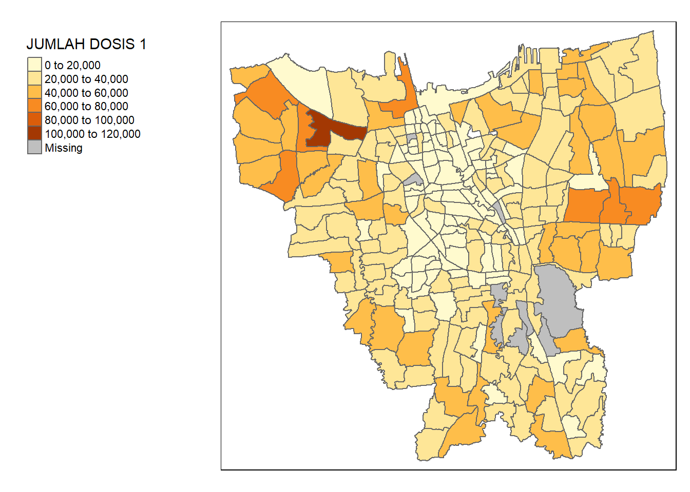
Viewing the map, we can see that there are some missing records. This might be due to mismatches in records.
unique(vaccine$KELURAHAN[!(vaccine$KELURAHAN %in% jkt_sf$DESA)])[1] "BALE KAMBANG" "HALIM PERDANA KUSUMAH" "JATI PULO"
[4] "KAMPUNG TENGAH" "KERENDANG" "KRAMAT JATI"
[7] "PAL MERIAM" "PINANG RANTI" "RAWA JATI" unique(jkt_sf$DESA[!(jkt_sf$DESA %in% vaccine$KELURAHAN)])[1] "KRENDANG" "RAWAJATI" "TENGAH"
[4] "BALEKAMBANG" "PINANGRANTI" "JATIPULO"
[7] "PALMERIAM" "KRAMATJATI" "HALIM PERDANA KUSUMA"spelling_mismatch <- data.frame(
Aspatial = sort(unique(vaccine$KELURAHAN[!(vaccine$KELURAHAN %in% jkt_sf$DESA)])),
Geospatial = c("BALEKAMBANG", "HALIM PERDANA KUSUMA", "JATIPULO", "TENGAH", "KRENDANG", "KRAMATJATI", "PALMERIAM", "PINANGRANTI", "RAWAJATI"))
spelling_mismatch Aspatial Geospatial
1 BALE KAMBANG BALEKAMBANG
2 HALIM PERDANA KUSUMAH HALIM PERDANA KUSUMA
3 JATI PULO JATIPULO
4 KAMPUNG TENGAH TENGAH
5 KERENDANG KRENDANG
6 KRAMAT JATI KRAMATJATI
7 PAL MERIAM PALMERIAM
8 PINANG RANTI PINANGRANTI
9 RAWA JATI RAWAJATIAs we can observe, the aspatial data names the kelurahan with spaces in between (e.g. RAWA JATI), while the geospatial data names them without spaces (e.g. RAWAJATI). In addition, there is a typo in the aspatial data (HALIM PERDANA KUSUMAH vs. HALIM PERDANA KUSUMA). As such, we need to standardise these names before performing a join.
vaccine <- vaccine %>%
mutate(KELURAHAN = recode(KELURAHAN,
"BALE KAMBANG" = "BALEKAMBANG",
"HALIM PERDANA KUSUMAH" = "HALIM PERDANA KUSUMA",
"JATI PULO" = "JATIPULO",
"KAMPUNG TENGAH" = "TENGAH",
"KERENDANG" = "KRENDANG",
"KRAMAT JATI" = "KRAMATJATI",
"PAL MERIAM" = "PALMERIAM",
"PINANG RANTI" = "PINANGRANTI",
"RAWA JATI" = "RAWAJATI",
.default = KELURAHAN))With this, we can join the dataframes once more.
jkt_vaccine <- left_join(jkt_sf, vaccine, by = c("DESA" = "KELURAHAN"))tm_shape(jkt_vaccine) +
tm_polygons("JUMLAH DOSIS 1") +
tm_layout(legend.outside = TRUE,
legend.outside.position = "left")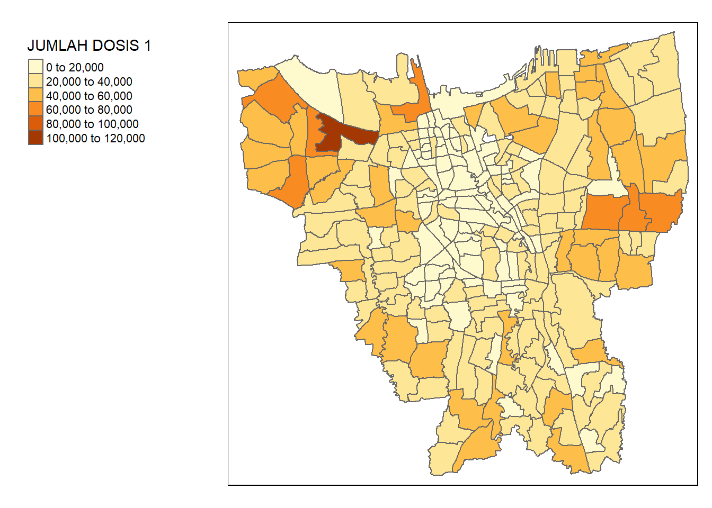
Convert DATE column into objects
Currently, our DATE columns are in the character data type. For our analysis, we want them to be in a date object format. The date strings written in Bahasa Indonesia format, so to do this, we must also set our locale to use the Indonesian locale.
Sys.setlocale(locale="id")[1] "LC_COLLATE=id;LC_CTYPE=id;LC_MONETARY=id;LC_NUMERIC=C;LC_TIME=id"# Create the date column
jkt_vaccine <- jkt_vaccine %>%
mutate(DATE = as.Date(DATE, format ="%d %B %Y"))Exploratory Data Analysis (EDA) with Choropleth Maps
Calculate monthly vaccination rates
The monthly vaccination rate for every kelurahan is defined as the amount of people who had been given the first dose up to that point divided the target population. We might also want to find out how the amount of people vaccinated with the second dose and third dose changes over time. As such, we will also calculate their monthly rates.
# Commented out because of time taken to run
#first_dose_rate <- jkt_vaccine %>%
# group_by(DESA, DATE) %>%
# summarise(`FIRST DOSE RATE` = sum(`JUMLAH DOSIS 1`) / SASARAN)
#second_dose_rate <- jkt_vaccine %>%
# group_by(DESA, DATE) %>%
# summarise(`SECOND DOSE RATE` = sum(`JUMLAH DOSIS 2`) / SASARAN)
#third_dose_rate <- jkt_vaccine %>%
# group_by(DESA, DATE) %>%
# summarise(`THIRD DOSE RATE` = sum(`JUMLAH DOSIS 3`) / SASARAN)We can combine them into a single dataframe.
# Commented out because it's dependent on the previous variables
#vaccine_rates <- first_dose_rate %>%
# cbind(second_dose_rate$`SECOND DOSE RATE`, third_dose_rate$`THIRD DOSE RATE`) %>%
# rename(
# `FIRST DOSE RATE` = `FIRST.DOSE.RATE`,
# `SECOND DOSE RATE` = `second_dose_rate..SECOND.DOSE.RATE.`,
# `THIRD DOSE RATE` = `third_dose_rate..THIRD.DOSE.RATE.`
# )Then, we can save it into an RDS format so that we do not have to go through this computational bottleneck again.
#saveRDS(vaccine_rates, file="data/rds/vaccine_rates.rds")We can read the file again from the RDS format.
vaccine_rates <- read_rds("data/rds/vaccine_rates.rds")glimpse(vaccine_rates)Rows: 3,132
Columns: 6
$ DESA <chr> "ANCOL", "ANCOL", "ANCOL", "ANCOL", "ANCOL", "ANCOL~
$ DATE <date> 2021-07-31, 2021-08-31, 2021-09-30, 2021-10-31, 20~
$ `FIRST DOSE RATE` <dbl> 0.4849877, 0.6161941, 0.7207166, 0.7498225, 0.76919~
$ `SECOND DOSE RATE` <dbl> 0.1745939, 0.3731156, 0.5585668, 0.6056709, 0.64584~
$ `THIRD DOSE RATE` <dbl> NA, NA, NA, NA, NA, NA, NA, NA, 0.1642795, 0.274272~
$ geometry <MULTIPOLYGON [m]> MULTIPOLYGON (((-3621016 69..., MULTIP~Choropleth mapping
We want to visualise the monthly choropleth maps for the total vaccination rate, first dose rate, second dose rate, and third dose rate. Therefore, we can create a utility function to make the process easier.
create_choropleth_map <- function(df, varname, colpal="Blues") {
tm_shape(df) +
tm_fill(varname,
palette = colpal,
style="quantile") +
tm_facets(by="DATE") +
tm_borders(alpha = 0.5)
}create_choropleth_map(vaccine_rates, "FIRST DOSE RATE", "Blues")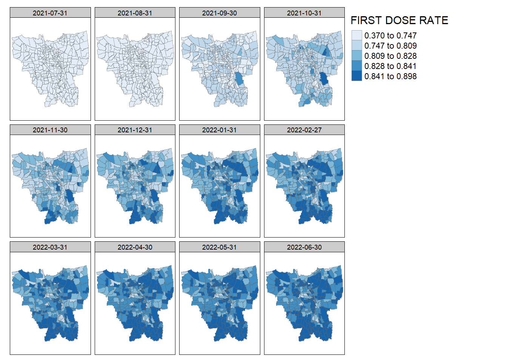
create_choropleth_map(vaccine_rates, "SECOND DOSE RATE", "Purples")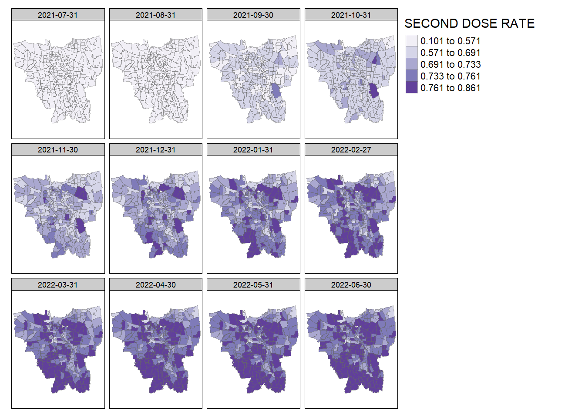
create_choropleth_map(vaccine_rates, "THIRD DOSE RATE", "Oranges")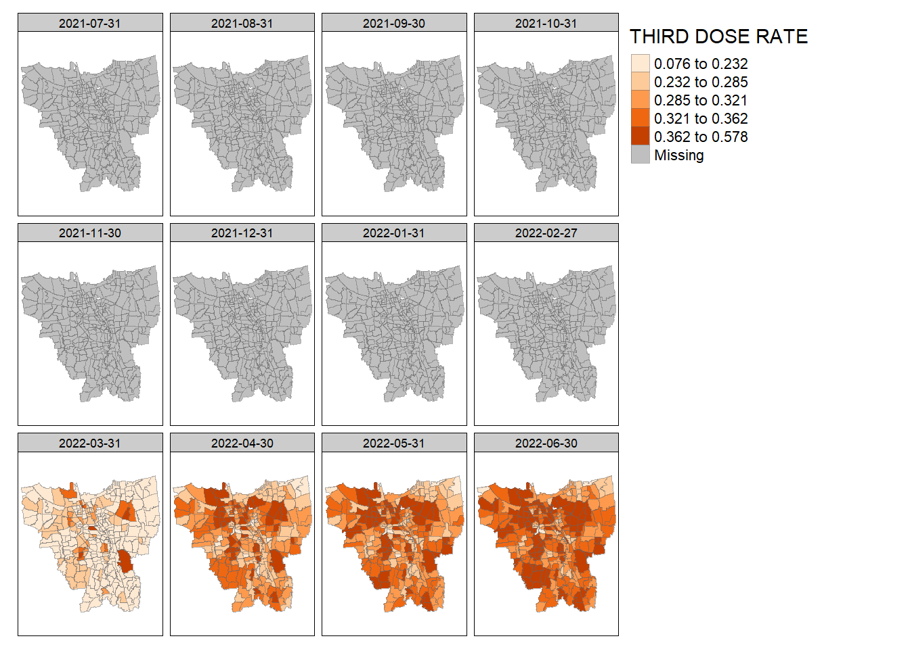
Analysis
Total Vaccination Rate: We can see that as time progresses, the overall vaccination rate across the province grows higher. In August 2021, some kelurahan in North Jakarta and East Jakarta notably start having a higher vaccination rate. Then, for a period from November 2021 - February 2022, the vaccination rate seems equally distributed across the province. Afterwards, vaccination rates in South Jakarta and North Jakarta start increasing in March 2022 and spreads across the rest of the province.
First Dose Rate: We can observe the same phenomenon of increase across the entire province. However, we can spot that certain kelurahan in North Jakarta and South Jakarta seem to have higher first dose vaccination rates.
Second Dose Rate: The vaccination rate seems to be higher around the edges of the province, particularly around South Jakarta and West Jakarta.
Third Dose Rate: There is no data from July 2021 – February 2022, presumably because third dose vaccinations have not started yet. However, the kelurahan at the border of North Jakarta and East Jakarta and a certain kelurahan at East Jakarta seem to be among the first notably to receive a high third dose vaccination rate.
Hot Spot and Cold Spot Analysis (HCSA)
Choropleth maps can give us an intuition on how the vaccination rates are distributed. However, it is not sufficient to truly give us an insight on the unevenness of the distribution. On a surface level, it gets harder to spot the inequality once vaccinations are more wide-spread (i.e. in more recent months) from the choropleth maps. Moreover, what we might intuitively think as “clusters” might not actually be clusters at all.
If we want to properly identify clusters of kelurahan with significantly high (“hot spots”) or low (“cold spots”) vaccination rates, we must employ some statistical methods.
To do this, we can use the local Getis-Ord Gi* statistic.
For the purpose of this analysis, we will be looking at the latest monthly data within our study period: 2022-06-30
Computing spatial weights
HCSA uses spatial weights to identify spatial clustering of high/low values in locations within a defined proximity. As such, we need to calculate a matrix of contiguity weights for each kelurahan before we can compute the local GI* statistic.
We will be deriving the contiguity weights with the Queen’s criterion. The Queen’s method derives its name from the Queen chess piece, so it essentially takes into account adjacent polygons horizontally, vertically, and diagonally.
The weights will also be inverse distance interpolated. We assume that surrounding areas are more similar to each other.
wm_q <- vaccine_rates %>%
filter(DATE == as.Date("2022-06-30")) %>% # filter for latest monthly data first
mutate(nb = st_contiguity(geometry), # create column of neighobrs
wt = st_inverse_distance(nb, geometry,
scale = 1,
alpha = 1), # create column of weights
.before = 1)Computing Local Gi* Statistics
Using the weight matrix data frame we have derived, we can now compute the local Gi* statistics.
We set our significance level to 0.05, so we will reject all Gi* with simulated p-value above that threshold and replace them with NA.
set.seed(8008)HCSA_first <- wm_q %>%
mutate(local_Gi = local_gstar_perm(`FIRST DOSE RATE`, nb, wt, nsim=99),
.before = 1) %>%
unnest(local_Gi) %>%
dplyr::select(c(gi_star, p_sim, DESA, DATE, `FIRST DOSE RATE`)) %>%
mutate(`p_sim` = replace(`p_sim`, `p_sim` > 0.05, NA),
`gi_star` = ifelse(is.na(`p_sim`), NA, `gi_star`))
arrange(HCSA_first, gi_star)Simple feature collection with 261 features and 5 fields
Geometry type: MULTIPOLYGON
Dimension: XY
Bounding box: xmin: -3644275 ymin: 663887.8 xmax: -3606237 ymax: 701380.1
Projected CRS: DGN95 / Indonesia TM-3 zone 54.1
# A tibble: 261 x 6
gi_star p_sim DESA DATE FIRST DO~1 geometry
<dbl> <dbl> <chr> <date> <dbl> <MULTIPOLYGON [m]>
1 -5.25 0.02 KEBON KACANG 2022-06-30 0.807 (((-3625808 687465.5, -3~
2 -4.51 0.02 KEBON MELATI 2022-06-30 0.783 (((-3626882 686779.9, -3~
3 -4.43 0.02 BENDUNGAN HILIR 2022-06-30 0.833 (((-3627088 685743.3, -3~
4 -3.47 0.02 PETAMBURAN 2022-06-30 0.787 (((-3628411 685042.2, -3~
5 -3.19 0.02 GONDANGDIA 2022-06-30 0.802 (((-3624308 687466.3, -3~
6 -3.12 0.04 KAMPUNG BALI 2022-06-30 0.825 (((-3625850 687583.2, -3~
7 -3.06 0.02 BATU AMPAR 2022-06-30 0.814 (((-3618791 676066.9, -3~
8 -2.98 0.02 GELORA 2022-06-30 0.839 (((-3628597 685303.7, -3~
9 -2.87 0.02 KEBON SIRIH 2022-06-30 0.828 (((-3623898 688271.9, -3~
10 -2.72 0.04 MENTENG 2022-06-30 0.823 (((-3623479 686316.2, -3~
# ... with 251 more rows, and abbreviated variable name 1: `FIRST DOSE RATE`HCSA_second <- wm_q %>%
mutate(local_Gi = local_gstar_perm(`SECOND DOSE RATE`, nb, wt, nsim=99),
.before = 1) %>%
unnest(local_Gi) %>%
dplyr::select(c(gi_star, p_sim, DESA, DATE, `SECOND DOSE RATE`)) %>%
mutate(`p_sim` = replace(`p_sim`, `p_sim` > 0.05, NA),
`gi_star` = ifelse(is.na(`p_sim`), NA, `gi_star`))
arrange(HCSA_second, gi_star)Simple feature collection with 261 features and 5 fields
Geometry type: MULTIPOLYGON
Dimension: XY
Bounding box: xmin: -3644275 ymin: 663887.8 xmax: -3606237 ymax: 701380.1
Projected CRS: DGN95 / Indonesia TM-3 zone 54.1
# A tibble: 261 x 6
gi_star p_sim DESA DATE SECOND DOSE~1 geometry
<dbl> <dbl> <chr> <date> <dbl> <MULTIPOLYGON [m]>
1 -4.97 0.02 CILINCING 2022-06-30 0.698 (((-3608930 700323.4, -3~
2 -4.00 0.02 KEBON KACANG 2022-06-30 0.708 (((-3625808 687465.5, -3~
3 -3.84 0.02 KALIBARU 2022-06-30 0.626 (((-3611558 700364.2, -3~
4 -3.77 0.02 LAGOA 2022-06-30 0.712 (((-3613975 697258.7, -3~
5 -3.41 0.04 SEMPER BARAT 2022-06-30 0.764 (((-3611299 695056.3, -3~
6 -3.31 0.02 SEMPER TIMUR 2022-06-30 0.738 (((-3610704 695221.9, -3~
7 -3.16 0.04 KEBON MELATI 2022-06-30 0.650 (((-3626882 686779.9, -3~
8 -2.96 0.02 PETAMBURAN 2022-06-30 0.664 (((-3628411 685042.2, -3~
9 -2.95 0.02 MARUNDA 2022-06-30 0.685 (((-3607419 701299.7, -3~
10 -2.62 0.02 TENGAH 2022-06-30 0.701 (((-3618479 674818.7, -3~
# ... with 251 more rows, and abbreviated variable name 1: `SECOND DOSE RATE`HCSA_third<- wm_q %>%
mutate(local_Gi = local_gstar_perm(`THIRD DOSE RATE`, nb, wt, nsim=99),
.before = 1) %>%
unnest(local_Gi) %>%
dplyr::select(c(gi_star, p_sim, DESA, DATE, `THIRD DOSE RATE`)) %>%
mutate(`p_sim` = replace(`p_sim`, `p_sim` > 0.05, NA),
`gi_star` = ifelse(is.na(`p_sim`), NA, `gi_star`))
arrange(HCSA_third, gi_star)Simple feature collection with 261 features and 5 fields
Geometry type: MULTIPOLYGON
Dimension: XY
Bounding box: xmin: -3644275 ymin: 663887.8 xmax: -3606237 ymax: 701380.1
Projected CRS: DGN95 / Indonesia TM-3 zone 54.1
# A tibble: 261 x 6
gi_star p_sim DESA DATE THIRD D~1 geometry
<dbl> <dbl> <chr> <date> <dbl> <MULTIPOLYGON [m]>
1 -3.15 0.02 SEMPER TIMUR 2022-06-30 0.300 (((-3610704 695221.9, -3~
2 -3.14 0.02 SEMPER BARAT 2022-06-30 0.324 (((-3611299 695056.3, -3~
3 -3.14 0.02 CILINCING 2022-06-30 0.259 (((-3608930 700323.4, -3~
4 -3.02 0.02 KALIBARU 2022-06-30 0.177 (((-3611558 700364.2, -3~
5 -2.95 0.02 LAGOA 2022-06-30 0.288 (((-3613975 697258.7, -3~
6 -2.53 0.02 RAWA BADAK UTARA 2022-06-30 0.284 (((-3615834 697699.9, -3~
7 -2.44 0.04 HARAPAN MULIA 2022-06-30 0.306 (((-3621251 689507, -362~
8 -2.42 0.02 MARUNDA 2022-06-30 0.239 (((-3607419 701299.7, -3~
9 -2.35 0.02 KEBON BAWANG 2022-06-30 0.301 (((-3617160 697993.4, -3~
10 -2.28 0.04 MANGGARAI 2022-06-30 0.292 (((-3622058 685018.6, -3~
# ... with 251 more rows, and abbreviated variable name 1: `THIRD DOSE RATE`Visualisation
tmap_mode("plot")
tm_shape(HCSA_first) +
tm_fill("gi_star", palette="PiYG", midpoint=0, title="Gi*") +
tm_borders(alpha = 0.5)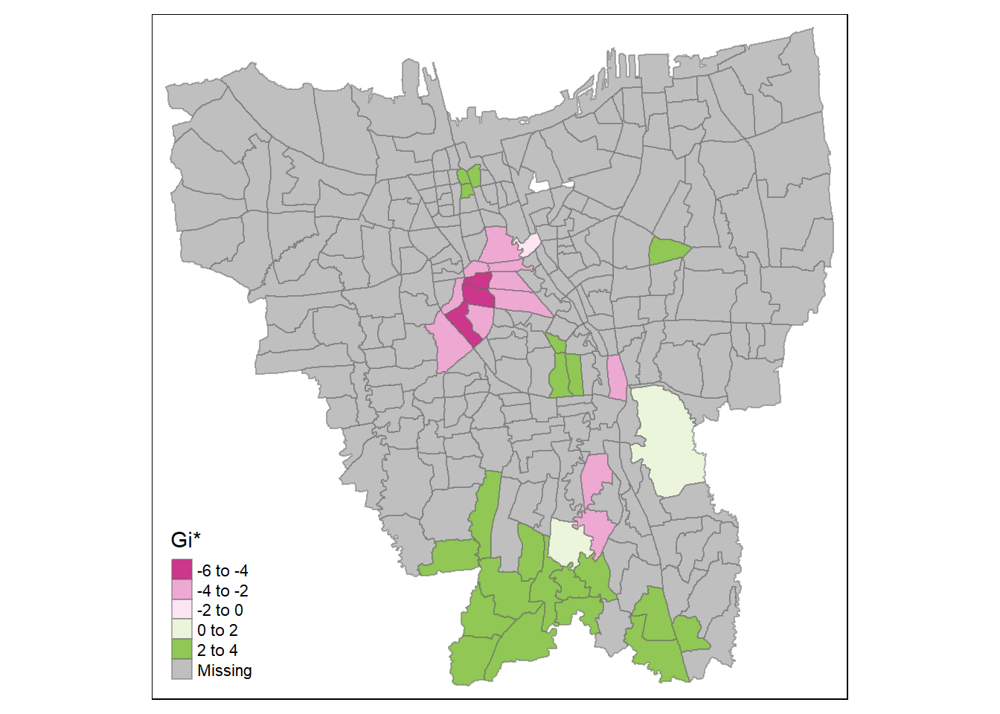
tmap_mode("plot")
tm_shape(HCSA_second) +
tm_fill("gi_star", palette="PiYG", midpoint=0, title="Gi*") +
tm_borders(alpha = 0.5)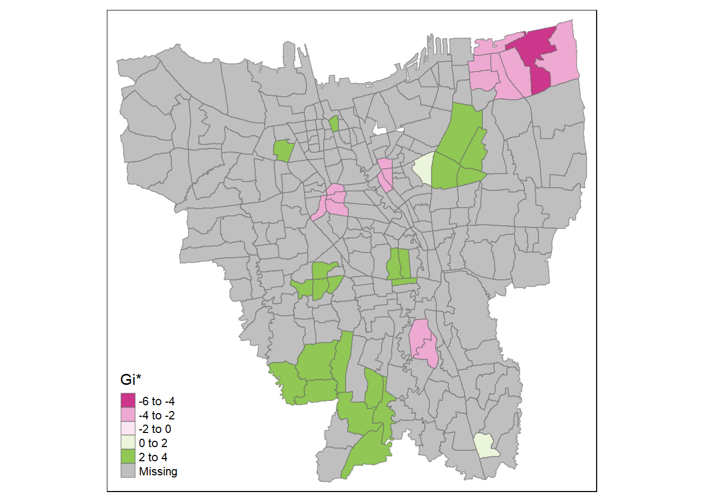
tmap_mode("plot")
tm_shape(HCSA_third) +
tm_fill("gi_star", palette="PiYG", midpoint=0, title="Gi*") +
tm_borders(alpha = 0.5)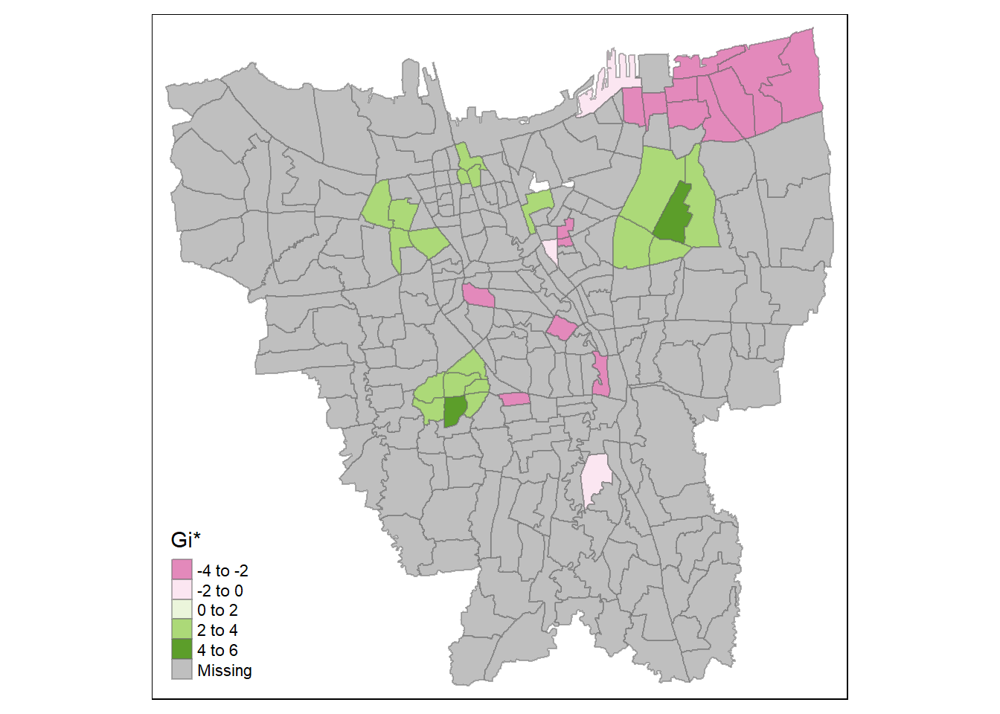
Analysis
It seems that at the later stages of the vaccination program, the southern coast of Jakarta have significantly higher overall vaccination rates than the other kelurahan. Meanwhile, central Jakarta have significantly lower overall vaccination rates. It is a similar case with the second dose, but we can see the formation of a cold spot around the north eastern part of Jakarta and a new hot spot around Kelapa Gading (the area bordering North Jakarta and East Jakarta). This phenomenon carries over to the third dose.
Therefore, we can infer that while the kelurahan near the southern coast of Jakarta have a higher number of vaccinated individuals overall, the hot spots in the second dose and third dose maps imply that people in those areas opted for the second & extra doses of vaccination. Meanwhile, the second and third doses are not given out as much in the cold spots, such as the notable cold spot around Cilincing (the far north eastern part of Jakarta).
Emerging Hot Spot Analysis (EHSA)
With HCSA, we can calculate and view the clusters for a point in time. The next logical question would be: how are these hot spots and cold spots changing over the period of the vaccination program? Are the clusters with high vaccination rate getting higher? Conversely, are the clusters with low vaccination rate getting lower? To do this, we will need to employ Emerging Hot Spot Analysis (EHSA) techniques.
Creating a Time Series Cube
To perform EHSA, we must create a time series cube out of our data. It is a way to represent spatial data in a temporal context. Using a cube, we can index spatial data by time, therefore creating a “time series” for each location.
We can use sfdep’s as_spacetime() method to create this data representation.
# Commented out because of time taken to run
#vaccine_rates_st <- vaccine_rates %>%
# as_spacetime(.loc_col="DESA", .time_col="DATE")Like the vaccine_rates dataframe, we can save it into an RDS file format as the conversion takes a long time.
# Commented out because it depends on previous commented code
#saveRDS(vaccine_rates_st, file="data/rds/vaccine_rates_st.rds")We can load it again from the RDS file. It will retain being a spacetime object.
vaccine_rates_st <- read_rds("data/rds/vaccine_rates_st.rds")
is_spacetime_cube(vaccine_rates_st)[1] TRUEComputing spatial weights
Just as we did in the HCSA, we need to calculate a matrix of spatial weights. We will be using the Queen’s method and inverse distance interpolation.
vaccine_rates_nb <- vaccine_rates_st %>%
activate("geometry") %>% # activate geometry context
mutate(nb = include_self(st_contiguity(geometry)),
wt = st_inverse_distance(nb, geometry,
scale = 1,
alpha = 1),
.before = 1) %>% # create neighbour and weight column
set_wts("wt") %>%
set_nbs("nb")Computing local Gi*
Using these new columns, we can calculate the local Gi* for each location grouped by DATE. For this analysis, we will be focusing more on the overall vaccination rate (i.e. FIRST DOSE RATE)
EHSA_gi_star <- vaccine_rates_nb %>%
group_by(`DATE`) %>%
mutate(gi_star = local_gstar_perm(
`FIRST DOSE RATE`, nb, wt, nsim=99),
.before = 1) %>%
unnest(gi_star)
EHSA_gi_star# A tibble: 3,132 x 15
# Groups: DATE [12]
gi_star e_gi var_gi p_value p_sim p_fold~1 skewn~2 kurto~3 DESA
<dbl> <dbl> <dbl> <dbl> <dbl> <dbl> <dbl> <dbl> <chr>
1 2.00 0.00382 0.0000000147 0.0451 0.06 0.03 -0.225 0.153 ANCOL
2 -0.901 0.00382 0.0000000203 0.368 0.32 0.16 0.346 -0.491 ANGKE
3 -3.84 0.00382 0.0000000299 0.000124 0.02 0.01 0.345 0.255 BALE~
4 -3.46 0.00382 0.0000000151 0.000536 0.02 0.01 -0.0937 -0.257 BALI~
5 -1.08 0.00383 0.0000000281 0.280 0.3 0.15 -0.371 -0.214 BAMB~
6 0.984 0.00383 0.0000000131 0.325 0.32 0.16 -0.114 0.271 BANG~
7 0.921 0.00383 0.0000000220 0.357 0.38 0.19 0.235 0.177 BARU
8 -5.08 0.00384 0.0000000172 0.000000379 0.02 0.01 -0.265 -0.223 BATU~
9 -1.00 0.00384 0.0000000200 0.316 0.28 0.14 0.0723 0.480 BEND~
10 -4.04 0.00386 0.0000000154 0.0000534 0.02 0.01 -0.186 -0.0200 BIDA~
# ... with 3,122 more rows, 6 more variables: DATE <date>,
# `FIRST DOSE RATE` <dbl>, `SECOND DOSE RATE` <dbl>, `THIRD DOSE RATE` <dbl>,
# wt <list>, nb <list>, and abbreviated variable names 1: p_folded_sim,
# 2: skewness, 3: kurtosisMann-Kendall Test
Using the Mann-Kendall statistical test, we can assess whether a set of values is increasing or decreasing over time. One advantage of this test is that the data does not need to conform to any specific distribution.
H0: There is no monotonic trend in the series.
H1: A trend exists, be it positive, negative, or non-null.
Significance level: 0.05
For this study, we will be selecting 3 kelurahans of interest.
Selecting Study Area
To get an idea on which kelurahan we should pick, we can check the highest vaccination rate (i.e. FIRST DOSE RATE) at different stages of the vaccination program
Early (September 2021):
vaccine_rates %>%
filter(DATE == as.Date("2021-09-30")) %>%
top_n(5, `FIRST DOSE RATE`) %>%
arrange(desc(`FIRST DOSE RATE`)) %>%
dplyr::pull(DESA)[1] "HALIM PERDANA KUSUMA" "KELAPA GADING TIMUR" "PEGANGSAAN DUA"
[4] "KAMAL MUARA" "GLODOK" Middle (January 2022):
vaccine_rates %>%
filter(DATE == as.Date("2022-01-31")) %>%
top_n(5, `FIRST DOSE RATE`) %>%
arrange(desc(`FIRST DOSE RATE`)) %>%
dplyr::pull(DESA)[1] "HALIM PERDANA KUSUMA" "SRENGSENG SAWAH" "MANGGARAI SELATAN"
[4] "GLODOK" "TEBET TIMUR" Late (June 2022):
vaccine_rates %>%
filter(DATE == as.Date("2022-06-30")) %>%
top_n(5, `FIRST DOSE RATE`) %>%
arrange(desc(`FIRST DOSE RATE`)) %>%
dplyr::pull(DESA)[1] "HALIM PERDANA KUSUMA" "SRENGSENG SAWAH" "MANGGARAI SELATAN"
[4] "MALAKA SARI" "GLODOK" We find that HALIM PERDANA KUSUMA seem to have the highest vaccination rate from the early stage of the vaccination program to the later stages. Additionally, GLODOK are also present as one of the top 5 in all the stages. We find that MANGGARAI SELATAN increases to being one of the top 5 kelurahan with the highest vaccination rate from the middle stage of the vaccination program to the final stage, but it was not included in the beginning.
Hence, we will be focusing our analysis on these three kelurahan.
Performing Mann-Kendall Test
EHSA_cbg_hpk <- EHSA_gi_star %>%
ungroup() %>%
filter(DESA == "HALIM PERDANA KUSUMA") |>
select(DESA, DATE, gi_star)ggplot(data = EHSA_cbg_hpk,
aes(x = DATE,
y = gi_star)) +
geom_line() +
theme_light()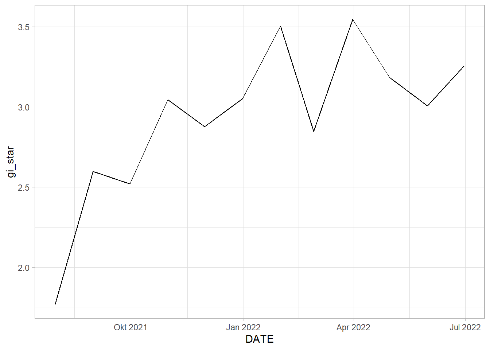
EHSA_cbg_hpk %>%
summarise(mk = list(
unclass(
Kendall::MannKendall(gi_star)))) %>%
tidyr::unnest_wider(mk)# A tibble: 1 x 5
tau sl S D varS
<dbl> <dbl> <dbl> <dbl> <dbl>
1 0.545 0.0164 36 66.0 213.EHSA_cbg_glodok <- EHSA_gi_star %>%
ungroup() %>%
filter(DESA == "GLODOK") |>
select(DESA, DATE, gi_star)ggplot(data = EHSA_cbg_glodok,
aes(x = DATE,
y = gi_star)) +
geom_line() +
theme_light()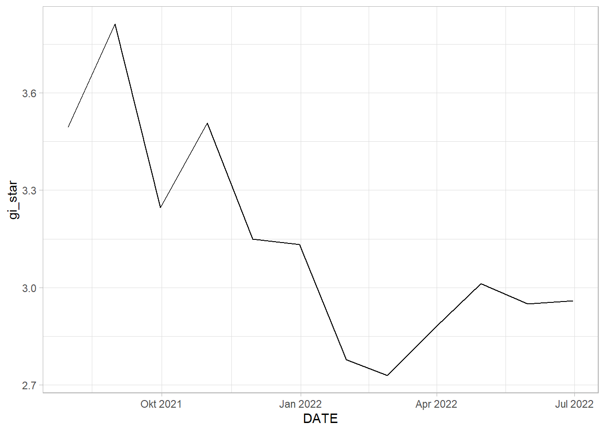
EHSA_cbg_glodok %>%
summarise(mk = list(
unclass(
Kendall::MannKendall(gi_star)))) %>%
tidyr::unnest_wider(mk)# A tibble: 1 x 5
tau sl S D varS
<dbl> <dbl> <dbl> <dbl> <dbl>
1 -0.545 0.0164 -36 66.0 213.EHSA_cbg_ms<- EHSA_gi_star %>%
ungroup() %>%
filter(DESA == "MANGGARAI SELATAN") |>
select(DESA, DATE, gi_star)ggplot(data = EHSA_cbg_ms,
aes(x = DATE,
y = gi_star)) +
geom_line() +
theme_light()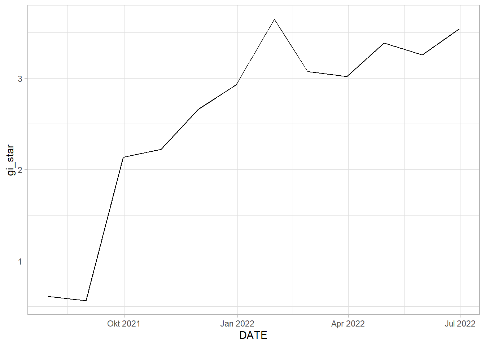
EHSA_cbg_ms %>%
summarise(mk = list(
unclass(
Kendall::MannKendall(gi_star)))) %>%
tidyr::unnest_wider(mk)# A tibble: 1 x 5
tau sl S D varS
<dbl> <dbl> <dbl> <dbl> <dbl>
1 0.758 0.000779 50 66.0 213.Analysis
HALIM PERDANA KUSUMA: By the graph of Gi* plotted against date, we can see somewhat of an upwards trend. This is statistically confirmed by the Mann-Kendall Test. We can reject the null hypothesis that there is no monotonic trend.
GLODOK: By the graph of Gi* plotted against date, we can see somewhat of an downwards trend. This is statistically confirmed by the Mann-Kendall Test. We can reject the null hypothesis that there is no monotonic trend. Therefore, we can infer that as time goes by, the rate of vaccination in Glodok gradually decreases in comparison to the other kelurahan.
MANGGARAI SELATAN: By the graph of Gi* plotted against date, we can see somewhat of an upwards trend. This is statistically confirmed by the Mann-Kendall Test. We can reject the null hypothesis that there is no monotonic trend.
EHSA Analysis on all kelurahan
We can perform emerging hotspot analysis on all kelurahan using sfdep’s emerging_hostpot_analysis() function.
EHSA <- emerging_hotspot_analysis(
x = vaccine_rates_st,
.var = "FIRST DOSE RATE",
k = 1,
nsim = 99
)Visualise the distribution of EHSA classes
ggplot(data = EHSA,
aes(x = classification)) +
geom_bar(fill="light blue")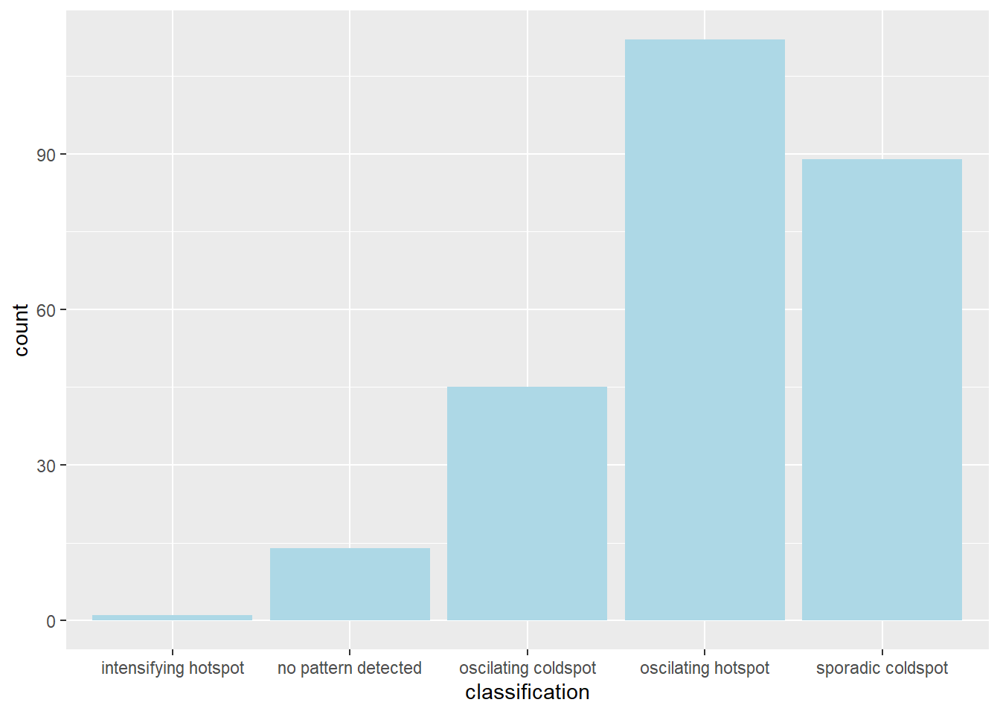
jkt_EHSA <- jkt_sf %>%
left_join(EHSA,
by = c("DESA" = "location")) %>%
mutate(`p_value` = replace(`p_value`, `p_value` > 0.05, NA),
`classification` = ifelse(is.na(`p_value`), NA, `classification`))
tmap_mode("plot")
tm_shape(jkt_EHSA) +
tm_fill("classification") +
tm_borders(alpha = 0.5)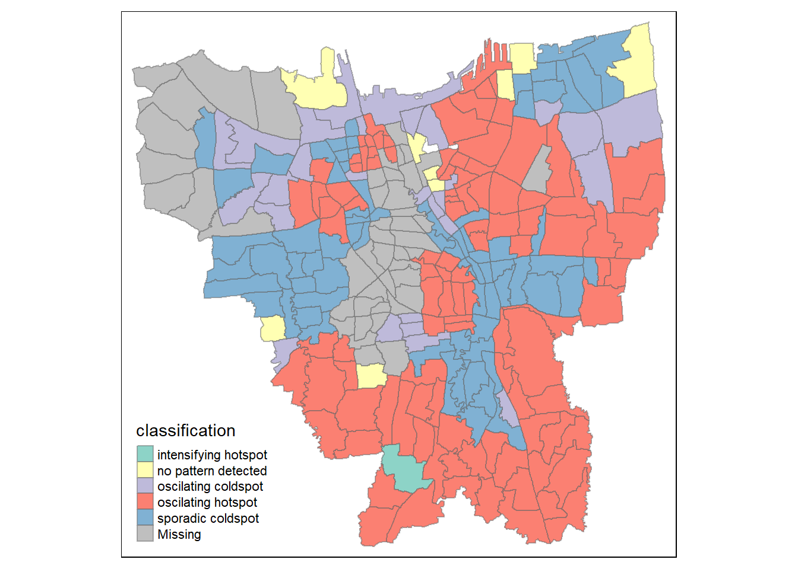
Analysis
A majority of the kelurahan, especially around the coast, seem to be in the form of an oscillating hot spot, where they become a statistically significant hot spot at the final time step despite being a statistically significant cold spot for the time steps before it. Whereas a few kelurahan in West Jakarta and North Jakarta are oscillating cold spots, which is the reverse of oscillating hot spots. A lot of the kelurahan in East Jakarta and West Jakarta are also sporadic cold spots, which means they are a statistically significant cold spot at the final time step with a history of being on-and-off cold spots.
filter(jkt_EHSA, classification == "intensifying hotspot")$DESA[1] "JAGAKARSA"Notably, there is also one kelurahan (JAGAKARSA) that follows the intensifying hot spot pattern, which means it is a significant hot spot most of the time.
In summary, the vaccination rates increase closer to the south-east coast of Jakarta, whereas West Jakarta seem to be cold spots with either oscillations or are sporadically cold.